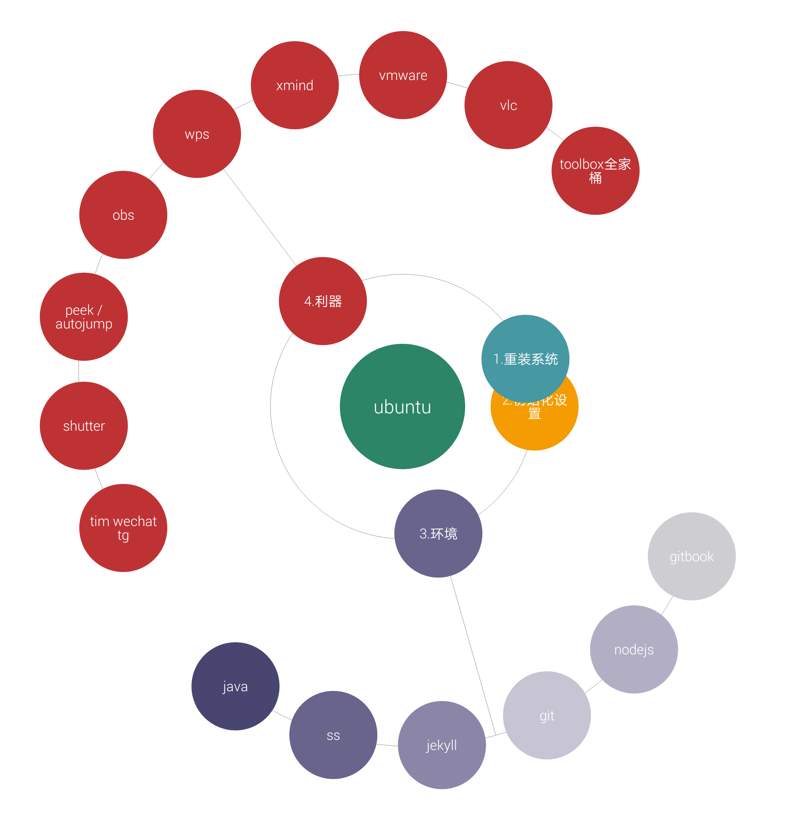

开始
这是一个关于 ubuntu 环境搭建，软件配置的面向 Ubuntu 新手的开源项目。
作者是一个折腾 Ubuntu 两年多的学生，从虚拟机到双系统，在 Windows 里装 ubuntu，在 ubuntu 里装 windows
踩过的坑比走过的路多，写过的 bug 比代码多，还折腾的不亦乐乎
从 Ubuntu 到 github，从一个开源社区到另一个开源社区，身临其境的感受真正的自由平等开放的互联网精神， 成千上万素未谋面的人共同努力的贡献，和在这种精神和人的推动下孕育出的优秀的开源作品，惊异而感叹
我也想成为开源社区的一员。
临近毕业，在最后的几个月里做了这个项目，虽然很简单，但我要把它作为我的开源精神的萌芽，也作为大学四年我在开源社区收获的总结， 在毕业的时候还能留下点，回忆？
hhh

TODO
- 添加在线编辑功能
- 换个肤，加个背景之类的
- bgm ？ 随机播放的那种
- 写一个setup脚本，一键安装所有软件
- 支持小表情图标 ？
- 网页计数器（卜蒜子或重新生成时记录不会被清空）
- 分享到QQ 微信 ？？好像没太大必要。。
- 添加一个 “关于我”
- RSS 订阅
Log
2019-04-01 0.1版 gitbook 支持实现雏形
2019-03-31 大体框架形成
某年某月 突然产生的想法